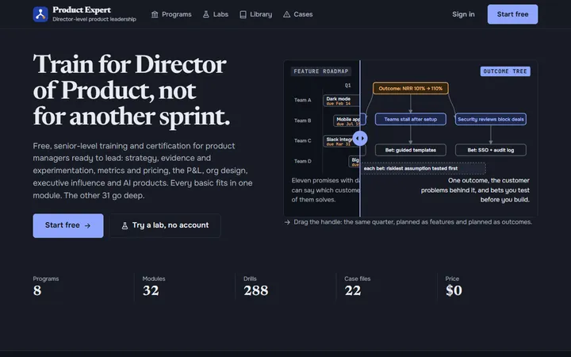

Все приложения · Arkvital
Все приложения, которые я создал и опубликовал.
57 работающих веб-приложений, созданных Arkvital в Монреале. Все работают в браузере, ничего устанавливать не нужно. Откройте любое, чтобы попробовать.
Для бизнеса 14

ArviStay
Красивый сайт в стиле модерн для вашего отеля: номера, видео, панорамы 360°, 3D-карта района и почасовой план отдыха для каждого типа гостей.
arvistay.com ↗
AutoAgile
Канбан, спринты и дорожные карты для команд из людей и ИИ-разработчиков. Оценки по порогам сложности, API для агентов и уровни, которые открываются по мере роста команды.
autoagile.anvil.app ↗
Better Than Marketplace
Продайте ненужное за секунды: сфотографируйте телефоном, дайте название — готово. Без категорий, форм и комиссий. Смотрите, что продают соседи рядом с вами.
bettermart.anvil.app ↗Бесплатно
Fillfox
Бесплатный конструктор форм: пишите форму как документ, делитесь ссылкой, смотрите каждый ответ и где люди остановились. Логика, тесты и подписи включены.
fillfox.anvil.app ↗Бесплатно
Good Landlord
Учитывайте аренду, расходы, ипотеку и долгосрочную прибыль от сдаваемого жилья и дайте арендаторам закрытый, защищённый от подделки журнал сообщений и ремонтов.
good-landlord.anvil.app ↗
Hookline
Бесплатная студия для постов в LinkedIn: зацепки, которые переживут «ещё», посты вашим голосом, спокойный календарь и честная аналитика. ИИ по желанию.
hookline.anvil.app ↗Бесплатно
Jev Buddy
Дружелюбное руководство для разработчиков по Jev, модели принятия решений на ИИ: выбор, noul и оценка с кодом, бизнес-примерами, песочницей и калькулятором стоимости.
jev-buddy.anvil.app ↗Бесплатно
Marguru
Опишите свой бизнес и получите готовые ИИ-промпты для рекламы, Google Maps, SEO, контента и отчётов в том порядке, в каком работало бы рекламное агентство.
marguru.anvil.app ↗
MonShop
Смотрите, что сегодня есть в независимых магазинах, кафе и ресторанах рядом с вами, по реальным фото полок и спецпредложениям, и получайте скидку 5 % там, где вы постоянный клиент.
monshop.ca ↗
PlanPlate
Бронирования во всех ваших ресторанах: часы работы, план зала с перетаскиванием, автоматическое подтверждение, меню, спецпредложения, события и форма бронирования для сайта.
planplate.com ↗
Prepsto
Панель отзывов, которая добавляется на любой сайт одной ссылкой. Собирайте, сортируйте и превращайте отзывы клиентов в пользовательские истории, а люди смогут следить за судьбой своей идеи.
prepsto.com ↗
RoboIntern
Опишите данные как список столбцов; RoboIntern подберёт подходящие модели машинного обучения, объяснит математику и напишет код на Python для обучения и прогнозов.
robointern.com ↗
Sheetsmith
Загрузите книгу Excel с таблицами, формулами, правилами и макросами VBA и получите веб-приложение и небольшой сервер на Python для вашей локальной сети.
sheetsmith.anvil.app ↗
VitalRPA
Веб-роботы для занятых команд: проверка доступности каждый час, контроль сроков SSL и доменов, маячок посетителей меньше 1 КБ и сценарии, которые срабатывают, когда что-то ломается.
vitalrpa.com ↗
Узнать новое 11

Adorable Science
Добрые научные новости с проверенными источниками, которые пишет сообщество. Статью может написать каждый; директора лабораторий проверяют каждую перед публикацией.
adorablescience.com ↗
AI Expert
Бесплатное обучение и сертификация по инженерии ИИ: контекстная инженерия, RAG в продакшене, агенты, оценки, безопасность и LLMOps, с упражнениями, лабораторными и разбором реальных инцидентов.
aiexpert.anvil.app ↗
Business Buddy
Как открыть малый бизнес в Монреале, шаг за шагом: барбершоп, пекарня, кафе, клининг, ремёсла и другое. Разрешения, налоги, расходы и личный план запуска.
business-buddy.anvil.app ↗Бесплатно
C-Suite Coach
Обучение для высшего руководства: реальные бизнес-кейсы, задачи совета директоров и упражнения с интервальным повторением. Получайте сертификаты C-Suite Coach Institute.
csuite-coach.anvil.app ↗
CAF Guide
Неофициальное приложение для изучения Вооружённых сил Канады: карточки для активного повторения о званиях, структуре, подготовке, истории и сокращениях, с ежедневным повторением.
caf-guide.anvil.app ↗
Doremi Road
Игра для обучения игре на фортепиано: играйте ноты, аккорды и последовательности на MIDI-клавиатуре, клавиатуре компьютера или сенсорном экране, развивайте слух и покорите Королевство Гармонии.
doremiroad.com ↗
Little Hero Books
Создайте мультяшного двойника вашего ребёнка, а затем читайте, раскрашивайте, перерисовывайте или печатайте классические сказки с ним в главной роли. Двенадцать сказок, пересказанных для детей 3–6 лет.
littleheroapp.com ↗
MrBigStage
Выйдите на большую сцену в VR, выступите перед 3D-аудиторией и получите советы по голосу: темп, паузы, слова-паразиты, интонация, громкость и зрительный контакт.
mrbigstage.anvil.app ↗
Osinty
Изучите разведку по открытым источникам (OSINT) так, как её применяют частные детективы: 24 урока, реалистичные вымышленные дела, набор инструментов и собственная картотека.
osinty.anvil.app ↗
Parapeet
Учите повседневные фразы на французском, испанском и итальянском в десяти тонах: начальнику, клиенту, грустному другу, любимому человеку. Свайпайте, проходите короткие уроки, держите серию.
parapeet.com ↗Бесплатно
Product Expert
Бесплатное обучение и сертификаты для будущих директоров по продукту: стратегия, эксперименты, метрики, ценообразование, P&L, построение команды, влияние на руководство и ИИ-продукты.
productexpert.anvil.app ↗
Музыка, видео и искусство 10

Humbeat
Создайте любую песню в браузере: выберите стиль от хоупкора до хеви-метала, запишите голос с автотюном и напойте мелодию, которая станет любым инструментом.
humbeat.anvil.app ↗Бесплатно
ImgNovella
Создавайте визуальные новеллы в браузере: сцены, персонажи, ветвящиеся выборы и несколько концовок. Поделитесь ссылкой или экспортируйте HTML-игру на продажу. Без программирования.
imgnovella.anvil.app ↗
Make Your Own Clothes
Стройте выкройки по меркам, перерисовывайте их, шейте в 3D на манекене с вашими размерами и следуйте пошаговой инструкции по пошиву.
make-my-clothes.anvil.app ↗
OScreenplay
Напишите сценарий, который всё откладываете: искры сюжета для ремикса, персонажи, реагирующие как живые люди, две временные линии, руководства по структуре и настоящий редактор сценариев.
oscreenplay.com ↗
Reelstuber
Загрузите длинное видео: Reelstuber найдёт лучшие моменты, переведёт их в формат 9:16, добавит пословные субтитры и экспортирует рилсы в MP4. Ничего не загружается на сервер.
reelstuber.anvil.app ↗
ToonyLoony
Создавайте мультяшных персонажей, оживляйте их суставами и палочками, а затем хватайте и двигайте, записывая собственный мультфильм с голосами и музыкой.
toonyloony.com ↗
VideoBlog Buddy
Записывайте экран и камеру, монтируйте и публикуйте видео на YouTube, Shorts и Reels о приложениях, которые вы создаёте. Всё в браузере; записи не покидают ваш компьютер.
videoblog-buddy.anvil.app ↗
VRtoToon
Создавайте 3D-мультфильмы в браузере: играйте каждого персонажа сами в VR-шлеме или мышью, режиссируйте на компьютере, экспортируйте видео или файлы Blender.
vrtotoon.anvil.app ↗Бесплатно
WallTracer
Закрепите картинку на настоящей стене с помощью шлема Quest, отложите контроллеры и обведите её карандашом. Скройте её одной кнопкой, чтобы проверить линии.
walltracer.anvil.app ↗
Yabanana
Пишите строки, стихи и хуки под 12 битов, построенных на теории песен и поэзии. Рифмы, сравнения и метафоры под рукой; делитесь текстами, получайте отзывы и голоса.
yabanana.com ↗
Здоровье и быт 10

Brain Mechanic
Инструкция по ремонту для психики: СДВГ, тревожность, нарциссизм и модели воспитания, бесплатные самопроверки и инструменты. Не медицинская консультация.
brain-mechanic.anvil.app ↗Бесплатно
CityCrossers
Клуб прогулок для тех, кто лучше пройдёт 20 км, чем пробежит 5: групповые прогулки, маршруты с остановками в кафе, новые знакомства, баллы и бонусы.
citycrossers.com ↗
Fun To Plan
Общая семейная доска для 2–4 человек: дела, события и списки желаний, семейный чат, повторяющиеся задачи по очереди и бонусные баллы за сделанное.
funtoplan.com ↗
Health Booker
Находите и бронируйте занятия йогой в студиях Монреаля с одним аккаунтом. Студии получают расписание, абонементы, замены и оплату преподавателей без комиссий и договоров.
health-booker.anvil.app ↗
Plan Friday
Спланируйте ужин на выходных в последний момент, в пятницу: отправьте одну ссылку, гости выбирают день и говорят, что принесут, а вы фиксируете лучший день. Гостям аккаунт не нужен.
planfriday.com ↗
PoundFighter
Микротренировки для рабочего дня в виде игры с коллекцией монстров: делайте повторы в кровати, за столом или стоя, считайте их голосом и поймайте 36 монстров.
poundfighter.com ↗
Service Request
Назначьте награду и получите помощь соседа: листья, снег, вывоз хлама, переезд и ещё 40 видов работ от 20 $. Оплата наличными или переводом Interac, с бонусом за качество.
service-request.anvil.app ↗
Subsudo
Виртуальный бойцовский клуб: запишите раунд боя с тенью на камеру телефона или ноутбука, отправьте как вызов и поднимайтесь в мировом и городском рейтингах.
subsudo.com ↗
Tai Chi Please
Мягкий утренний тайцзи в бамбуковом лесу: занятия с 3D-учителем, цигун, лимфатический самомассаж и форма из 24 движений. Начните без регистрации.
tai-chi-please.anvil.app ↗
Topameal
Ужин решён. Topameal подбирает быстрые блюда на одной сковороде к рису, пасте и картошке, которые у вас уже есть, и составляет список покупок на неделю.
topameal.com ↗
Игры и развлечения 8

Busy Bun
Играйте маленькой булочкой бао в кулинарном путешествии: выполняйте поручения соседей, наполняйте булочку, громите гнёзда вредителей и доберитесь до пароварки через 16 миров и 118 уровней.
busybun.com ↗
Campfire
Живой симулированный костёр: пламя из симуляции жидкости, случайный треск, поленья, которые обугливаются и проваливаются. Три лагеря, таймер сна, без регистрации.
campfire.anvil.app ↗Бесплатно
City Fun Time
Ваш настоящий район, воссозданный в 3D по карте. Выполняйте поручения, заводите друзей, влюбляйтесь, открывайте бизнес и захватывайте кварталы. Более 150 миссий в реальных местах.
city-fun-time.anvil.app ↗
Mafia Camp
Видеоигра для вечеринки на 3–10 друзей: все заходят в один видеозвонок в браузере, получают тайную роль и играют в Мафию в лагере Moonlake. Без аккаунтов.
mafia-camp-game.anvil.app ↗
PerfectCast
Подбирайте актёров для новых книг в жанре романтического фэнтези: каждый персонаж, ваш коллаж звёзд мечты и выбор всего фандома. Восхищайтесь подборками других читателей и комментируйте их.
perfectcast.anvil.app ↗
PhotoHunt
Создайте фотоквест за пять минут: сфотографируйте вещи дома, дети сканируют QR-код и наперегонки находят и фотографируют их.
photohunt.anvil.app ↗Бесплатно
QuickyBricks
Катайте, рисуйте и выводите смешливую семью мягких 3D-кубиков. Держитесь за руки с кубиками других игроков, чтобы появились кубики-малыши. Забавная браузерная игра для детей и взрослых.
quickybricks.com ↗
Snackpuncher
Боксёрский VR-квест для Meta Quest и шлемов WebXR: сражайтесь с ордой мультяшного фастфуда в десяти землях. Каждый бой — тренировка. Можно играть и на экране.
snackpuncher.anvil.app ↗
Полезные инструменты 4

CarChoice
Отфильтруйте 268 моделей машин по цене, мощности, запасу хода, багажнику, местам, буксировке и опциям, оставьте пять, ищите на сайтах объявлений и находите выгодные предложения.
carchoice.anvil.app ↗Бесплатно
Faves Buddy
Наведите порядок в открытых вкладках, метках на карте, скриншотах и идеях. Faves Buddy сортирует их без ИИ, показывает, что рядом, и находит то, что вам понравится.
faves-buddy.anvil.app ↗
Logsteps
Пройдите по комнате с телефоном и получите 3D-модель, которую можно пересматривать, измерять, отмечать заметками, делиться ссылкой и редактировать на компьютере.
logsteps.com ↗
Robo Presence
Соберите робота с камерой на колёсах из Raspberry Pi, Arduino или старого телефона, установите его одной командой и управляйте вживую из любого браузера через WebRTC.
robo-presence.anvil.app ↗
Хотите такое для своей команды?
Давайте обсудим, что вам нужно.
Большинство из них началось с проблемы одного человека. Если у вас есть процесс, который ломается, или идея, к которой вы постоянно возвращаетесь, расскажите мне.
Поговорим ↗